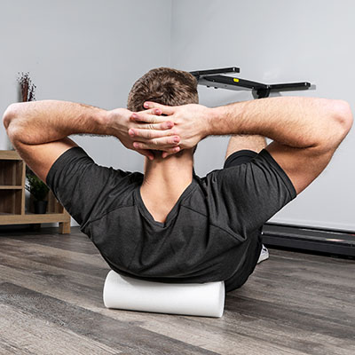
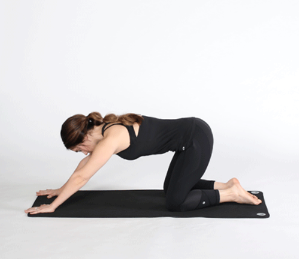
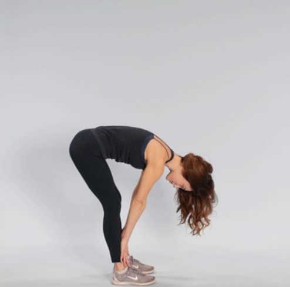
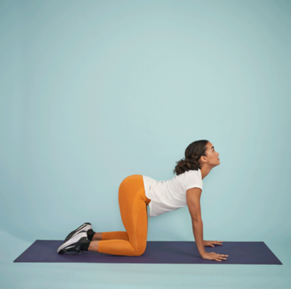
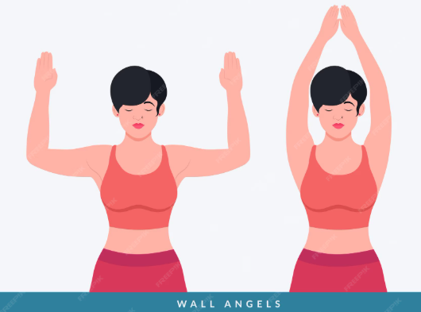
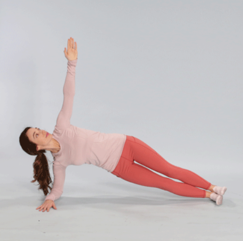
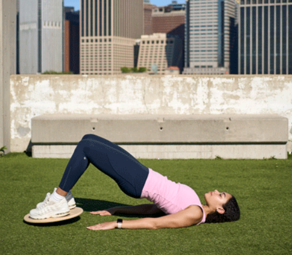
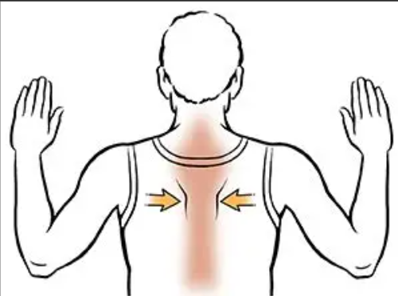

Posture correction is the practice of improving and maintaining proper body alignment and positioning to promote overall health and well-being. Good posture involves aligning the body in a way that minimizes strain on muscles, ligaments, and joints while maximizing efficiency and comfort. Poor posture can lead to various health issues, including back pain, neck pain, headaches, and reduced mobility. Posture correction techniques may include exercises, stretches, ergonomic adjustments, and lifestyle changes to help individuals achieve and maintain optimal posture throughout their daily.

Common Postural Issues
Some common postural issues include:
Forward Head Posture: This occurs when the head juts forward, putting strain on the neck and upper back.
Rounded Shoulders: This is characterized by the shoulders rolling forward, often due to prolonged sitting or poor ergonomics.
Kyphosis: An excessive outward curve of the upper back, leading to a hunched appearance.
Swayback: An exaggerated inward curve of the lower back, often caused by weak abdominal muscles and tight hip flexors.
Flat Back: A loss of the natural curve in the lower back, which can lead to stiffness and discomfort.
.
12 Exercises to Improve Your Posture
A combination of yoga, stretching, and strengthening exercises may help you to fix or correct your posture over time.
Maintaining good posture is important for helping you develop strength, flexibility, and balance.
These may reduce the risk of muscle and spinal injuries that could lead to musculoskeletal disorders and improve body-related emotions like body image satisfaction and self-appraisal.
Some research suggests that a combination of exercises that focus on strengthening, stretching, and lengthening the spine and torso could help improve your posture.
Here are 12 exercises to help improve your posture.
1. Child’s Pose.

This yoga pose helps stretch the lower back, hips, and thighs, promoting relaxation and improved posture.
To perform Child’s Pose:
1. Start on your hands and knees, with your wrists aligned under your shoulders and your knees under your hips.
2. Sit back onto your heels, reaching your arms forward and lowering your chest toward the floor.
3. Hold the position for 20-30 seconds, breathing deeply.
4. Return to the starting position and repeat 2-3 times.
2. Forward fold

This stretch targets the hamstrings and lower back, helping to alleviate tension and improve posture.
To perform a Forward Fold:
1. Stand with your feet hip-width apart.
2. Hinge at your hips and fold forward, reaching for your toes.
3. Let your head hang heavy and relax your neck.
4. Hold for 20-30 seconds, then slowly roll back up to standing.
5. Repeat 2-3 times.
3. Cat-Cow Stretch

This dynamic stretch helps improve spinal flexibility and posture by alternating between arching and rounding the back.
To perform the Cat-Cow Stretch:
1. Start on your hands and knees, with your wrists aligned under your shoulders and your knees under your hips.
2. Inhale as you arch your back, lifting your head and tailbone (Cow Pose).
3. Exhale as you round your back, tucking your chin to your chest (Cat Pose).
4. Continue to alternate between these two positions for 30 seconds to 1 minute.
4. Wall Angels

This exercise strengthens the upper back and shoulders, promoting better posture.
To perform Wall Angels:
1. Stand with your back against a wall, feet about 6 inches away from the wall.
2. Press your lower back, upper back, and head against the wall.
3. Raise your arms to form a "W" shape, with your elbows bent and hands at shoulder height.
4. Slowly raise your arms to form a "Y" shape, keeping your hands and elbows in contact with the wall.
5. Lower your arms back to the "W" position.
6. Repeat for 10-15 repetitions.
5. Plank

This core-strengthening exercise helps support proper posture by engaging the abdominal and back muscles.
To perform a Plank:
1. Start in a forearm plank position, with your elbows directly under your shoulders and your body in a straight line from head to heels.
2. Engage your core muscles and hold the position for 20-60 seconds.
3. Lower your body to the floor and rest for a few seconds.
4. Repeat 2-3 times.
6. Bridge

This exercise strengthens the glutes and lower back, which are essential for maintaining good posture.
To perform a Bridge:
1. Lie on your back with your knees bent and feet flat on the floor, hip-width apart.
2. Press through your heels and lift your hips toward the ceiling, squeezing your glutes at the top.
3. Hold for a few seconds, then lower your hips back to the floor.
4. Repeat for 10-15 repetitions.
7. Shoulder Blade Squeeze

This exercise targets the upper back muscles, helping to improve posture by pulling the shoulders back.
To perform Shoulder Blade Squeeze:
1. Sit or stand with your back straight and arms at your sides.
2. Squeeze your shoulder blades together as if you are trying to hold a pencil between them.
3. Hold the squeeze for 5-10 seconds, keeping your shoulders relaxed and down.
4. Release and repeat for 10-15 repetitions.
This exercise can be done several times a day to counteract the effects of prolonged sitting or poor posture.